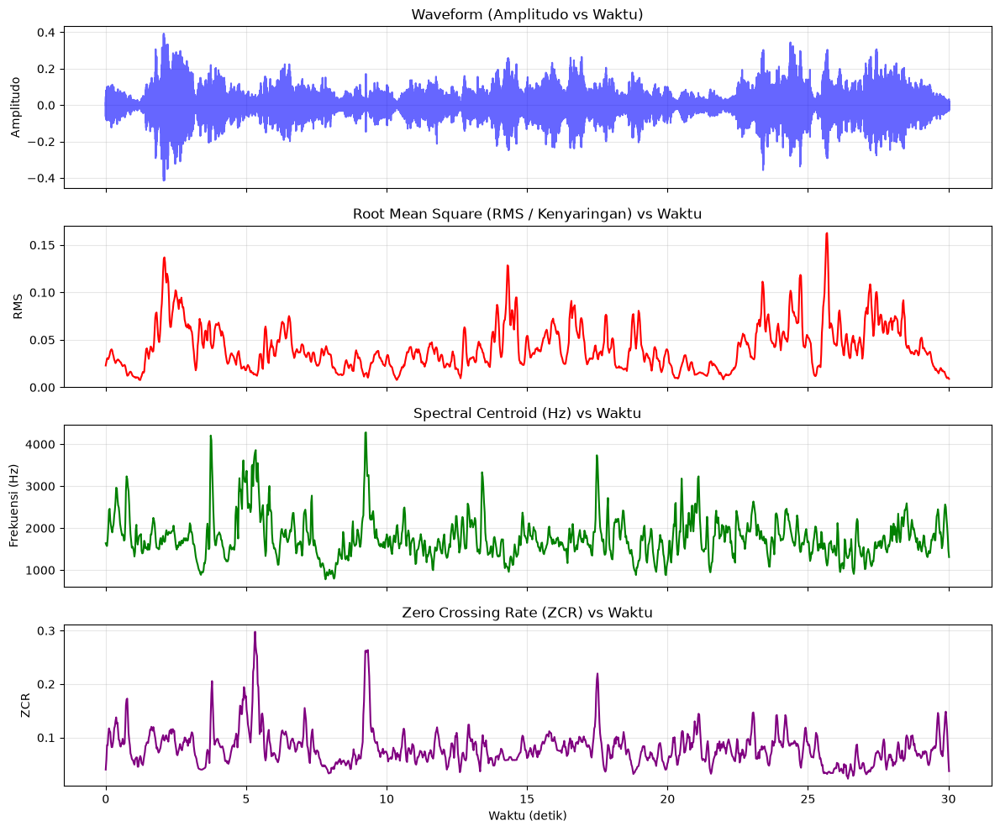
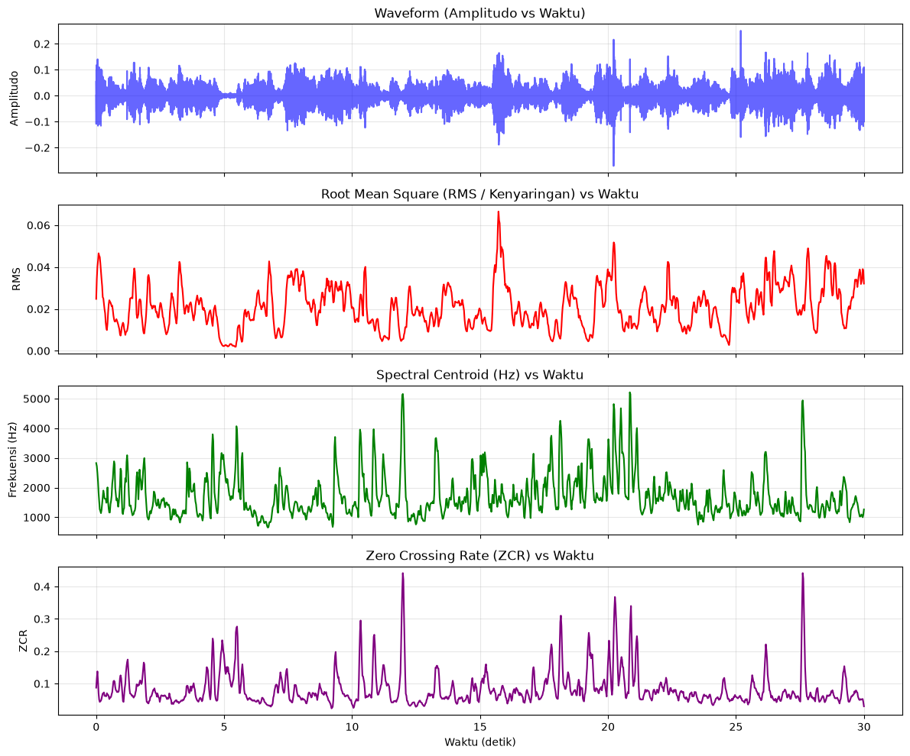
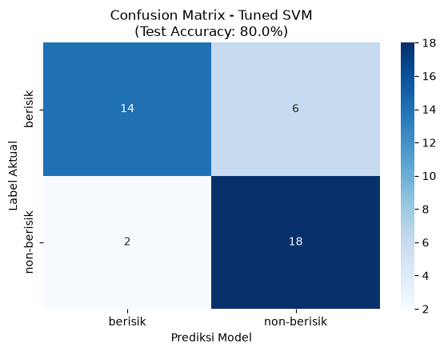

Klasifikasi Audio Berisik vs Non-Berisik#
1. Bussiness Understanding#
1.1 Latar Belakang#
Lingkungan laboratorium di Universitas Trunojoyo Madura (UTM) memiliki dinamika akustik yang beragam. Dalam kondisi operasional normal, suasana lab diisi oleh aktivitas mahasiswa seperti berdiskusi, berkolaborasi, bermain, serta suara operasional perangkat keras seperti pendingin ruangan (AC).
Kondisi suara di dalam laboratorium dapat dikategorikan secara garis besar menjadi dua kondisi utama:
Kondisi Non-Berisik (Tenang/Hening): Suasana ketika mahasiswa fokus bekerja secara mandiri, didominasi oleh latar belakang yang konstan dan stabil (steady-state background noise) seperti dengungan AC dan diskusi ringan mahasiswa.
Kondisi Berisik (Rame/Gaduh): Suasana ketika terjadi interaksi sosial yang intensif, diskusi kelompok yang ramai, gelak tawa, atau aktivitas bergerak yang menghasilkan energi akustik impulsif dan fluktuatif.
Kemampuan sistem cerdas untuk mengenali dan mengklasifikasikan kondisi akustik ini secara otomatis sangat berguna untuk pemantauan tingkat kebisingan ruangan, pengelolaan fasilitas kampus yang adaptif, maupun sebagai sistem pendukung manajemen kualitas kenyamanan belajar.
1.2 Tujuan#
Tujuan dari proyek ini adalah membangun sistem klasifikasi biner berbasis Machine Learning menggunakan algoritma Support Vector Machine (SVM) untuk mendeteksi apakah suatu sampel rekaman audio laboratorium di lingkungan UTM termasuk dalam kategori berisik atau non-berisik berdasarkan ekstraksi fitur akustik (RMS, Spectral Centroid, ZCR, dan MFCC).
2. Data Understanding#
Dataset terdiri atas rekaman suara riil berformat .mp3 dengan laju percontohan (sampling rate) \(f_s = 22050\text{ Hz}\), dikelompokkan ke dalam dua kelas biner:
berisik: Rekaman lingkungan berisiknon-berisik: Rekaman lingkungan hening/tenang
2.1 Ringkasan Sample Data#
Total Sample Audio 200 sample audio yang terdiri dari:
Kelas Berisik 100 sampleKelas Non-Berisik 100 sample
2.2 Ekstraksi Fitur Audio#
2.2.1 RMS (Root Mean Square)#
a. Definisi RMS#
Root Mean Square (RMS) adalah ukuran daya rata-rata atau energi efektif dari sinyal audio dalam suatu jendela waktu (frame). Dalam persepsi manusia, RMS berkorelasi langsung dengan tingkat kenyaringan (loudness) suara:
Audio
berisikKetika banyak mahasiswa bersuara bersamaan, tertawa, atau berseru, amplitudo gelombang naik secara signifikan. Nilai rata-rata RMS akan jauh lebih tinggi dibanding kondisi tenang.Audio
non-berisikHanya terdengar dengungan AC, kipas PC lab, atau ketikan tuts keyboard sesekali, dan mahasiswa yang berdiskusi tidak ramai sehingga RMS mendekati nol (amplitudo rendah).
b. Rumus Matematis :#
Untuk sebuah frame sinyal diskret \(x[n]\) dengan panjang \(N\) sampel, nilai RMS dihitung sebagai:
Di mana:
\(N\) = panjang frame (misal: 2048 sampel)
\(x[n]\) = amplitudo sinyal audio pada sampel ke-\(n\)
c. Contoh Perhitungan#
Misalkan kita memiliki satu frame kecil berisi 5 sampel sinyal:
Kuadratkan setiap sampel (\(x[n]^2\)):
Hitung jumlah kuadrat (\(\sum \vert{}x[n]\vert{}^2\)):
Bagi dengan jumlah sampel (\(N = 5\)):
Akar Kuadrat Hasilnya:
2.2.2 Spectral Centroid#
a. Definisi Spectral Centroid#
Spectral Centroid adalah ukuran yang menunjukkan letak pusat massa (titik berat frekuensi) dari suatu spektrum suara. Dalam persepsi manusia, Spectral Centroid diasosiasikan dengan “kecerahan” (brightness) suara.
Audio
berisikSuara tawa melengking, gesekan kaki meja/kursi lab ke lantai keramik, atau teriakan menghasilkan komponen frekuensi menengah-tinggi yang dominan. Ini menarik titik berat spektrum ke frekuensi yang lebih tinggi (Hz besar).Audio
non-berisikLab kosong/hening biasanya didominasi oleh suara berfrekuensi rendah (low-frequency rumble) dari perangkat komputer atau ventilasi udara, sehingga centroid-nya lebih rendah.
Cara Kerja Pada Code:
centroid = librosa.feature.spectral_centroid(y=y, sr=sr)[0]
Penjelasan:
Sinyal dibagi per frame (frame_length = 2048, hop_length = 512). Sinyal tiap frame diubah dari domain waktu ke domain frekuensi menggunakan STFT (Short-Time Fourier Transform). Dihitung nilai spectral centroid (dalam satuan Hertz / Hz) untuk tiap frame. Di tahap pembuatan dataset, dirata-ratakan dengan np.mean(centroid) untuk mewakili 1 file audio.
b. Rumus Matematis :#
Untuk sebuah frame ke-\(t\):
Di mana:
\(f(k)\): Frekuensi tengah pada bin/pita frekuensi ke-\(k\) (dalam Hz)
\(\vert{}S_t(k)\vert{}\): Magnitudo (besaran energi) spektrum pada bin ke-\(k\)
Prinsip rumus ini sama persis dengan rata-rata tertimbang (weighted average): frekuensi dikalikan magnitudonya, lalu dibagi total magnitudo.
c. Contoh Perhitungan#
Misalkan pada satu frame hasil Fourier Transform, terdapat 3 pita frekuensi (\(k=0, 1, 2\)):
Bin \((k)\) = \(1, 2, 3\)
Frekuensi \(f(k) (Hz)\) = \(500Hz, 1000Hz, 2000Hz\)
Magnitudo \(\vert{}S_t(k)\vert{}\) = \(2, 5, 1\)
Hitung pembilang (Jumlah Frekuensi \(\times\) Magnitudo):
Hitung penyebut (Total Magnitudo):
Hitung Centroid:
Artinya, pusat energi frekuensi pada frame ini berada di sekitar 1000 Hz.
2.2.3 ZCR (Zero Crossing Rate)#
a. Definisi ZCR (Zero Crossing Rate)#
Zero Crossing Rate (ZCR) adalah laju atau tingkat seberapa sering sinyal audio gelombang domain waktu berpindah tanda dari positif ke negatif atau sebaliknya (memotong garis amplitudo nol) dalam rentang waktu tertentu.
Audio
berisikObrolan banyak orang yang bertumpuk (babble noise), suara tawa terbahak-bahak, dan gesekan benda menghasilkan gelombang acak yang sering berganti tanda positif-negatif, sehingga ZCR cenderung lebih tinggi dan bervariasi.Audio
non-berisikGelombang suara latar lab cenderung stabil dan monoton, menghasilkan ZCR yang lebih teratur dan rendah.
Cara Kerja Pada Code:
zcr = librosa.feature.zero_crossing_rate(y=y)[0]
Penjelasan:
Sinyal dibagi per frame (frame_length = 2048, hop_length = 512). Dihitung rasio berapa kali sinyal berganti tanda dibagi panjang frame. Pada pembuatan dataset, dirata-ratakan dengan np.mean(zcr).
b. Rumus Matematis#
Untuk frame ke-\(t\) dengan panjang sample \(K\):
Di mana fungsi tanda \(\text{sgn}(x)\) didefinisikan:
Jika dua sampel berturutan tandanya berbeda (misal \(+1\) dan \(-1\)), maka \(\vert{}1 - (-1)\vert{} = 2\)
Faktor \(\frac{1}{2}\) menormalkannya menjadi hitungan \(1\) perpotongan
Pembagian dengan \((K-1)\) menghasilkan nilai rasio rentang \(0\) sampai \(1\)
c. Contoh Perhitungan Manual#
Misalkan sebuah frame pendek memiliki \(K = 5\) sampel amplitudo:
Cek Perubahan Tanda antar sample berturutan
Sampel 1 (\(0.2\)) ke Sampel 2 (\(-0.4\)): Berubah tanda (Positif \(\rightarrow\) Negatif) \(\rightarrow\) Hitung = 1
Sampel 2 (\(-0.4\)) ke Sampel 3 (\(0.1\)): Berubah tanda (Negatif \(\rightarrow\) Positif) \(\rightarrow\) Hitung = 1
Sampel 3 (\(0.1\)) ke Sampel 4 (\(0.3\)): Tidak berubah (Positif \(\rightarrow\) Positif) \(\rightarrow\) Hitung = 0
Sampel 4 (\(0.3\)) ke Sampel 5 (\(-0.2\)): Berubah tanda (Positif \(\rightarrow\) Negatif) \(\rightarrow\) Hitung = 1
Total Perpotongan Nol
Hitung ZCR
Nilai ZCR frame tersebut adalah 0.75 (artinya 75% dari transisi sampel memotong garis nol).
2.2.4 MFCC (Mel-Frequency Cepstral Coefficients)#
a. Definisi MFCC#
MFCC adalah fitur representasi spektrum suara yang meniru cara pendengaran manusia (koklea telinga) mempersepsikan frekuensi. Telinga manusia sangat sensitif membedakan nada pada frekuensi rendah (di bawah \(1000\text{ Hz}\)), tetapi kurang sensitif membedakan perubahan nada pada frekuensi tinggi. Pada data ini, diambil 13 koefisien (n_mfcc=13) yang merepresentasikan amplop spektrum (spectral envelope), bentuk timbre suara, dan resonansi akustik. MFCC sangat efektif membedakan “suara manusia yang sedang bersahut-sahutan/bercanda” dari “suara dengung mesin/perangkat lab”, bahkan jika desibel (RMS) AC lab kebetulan cukup keras.
Cara Kerja Pada Code:
mfcc = librosa.feature.mfcc(y=y, sr=sr, n_mfcc=13)
Penjelasan:
Output mfcc berbentuk matriks \((13 \times M)\), di mana baris 1 s.d. 13 adalah koefisien mfcc_1 sampai mfcc_13, dan kolom \(M\) adalah jumlah frame.
b. Rumus Matematis#
Proses pembentukan MFCC terdiri dari 5 tahapan berurutan:
Fourier Transform (STFT)
Sinyal per-frame diubah ke spektrum daya (Power Spectrum):
Konversi ke skala Mel
Frekuensi \(f\) (dalam Hz) diubah ke skala Mel \(m\):
Mel-Filterbank:
Spektrum daya dilewatkan pada susunan filter segitiga (biasanya 40 atau 128 filter Mel). Energi pada setiap filter ke-\(m\) dijumlahkan:
Logarithmic Compression:
Mengambil logaritma dari energi filterbank (karena telinga manusia mendengar kenyaringan suara secara logaritmik/desibel):
Discrete Cosine Transform (DCT):
DCT diterapkan pada energi logaritma tersebut untuk mereduksi korelasi antar filter dan memisahkan amplop spektrum:
Di mana \(n = 1, 2, \dots, 13\) adalah koefisien MFCC ke-\(n\).
c. Contoh Perhitungan Manual#
Misalkan setelah melalui Mel-Filterbank dan logaritma, didapatkan nilai log-energi pada 3 filter Mel (\(M_{\text{filters}} = 3\)):
Kita hitung koefisien MFCC ke-1 (\(n = 1\)):
Rumus per suku:
Untuk \(m = 1\)
Untuk \(m = 2\)
Untuk \(m = 3\)
Hasil \(c_1\) (MFCC 1):
Proses yang sama diulang untuk \(n = 2, 3, \dots, 13\) untuk menghasilkan 13 koefisien MFCC.
2.3 Visualisasi Time-Series Fitur#
Visualisasi time-series membedah perilaku audio secara dinamis per jendela waktu (time-frame):
Waveform(Amplitudo vs Waktu): Memetakan deviasi tekanan udara. Audio berisik memiliki kerapatan amplitudo tinggi sepanjang rekaman.RMSvsWaktu: Menampilkan fluktuasi energi sesaat; puncak-puncak tajam menandai suara impulsif atau desau konstan.Spectral CentroidvsWaktu: Menunjukkan variasi pusat frekuensi dari waktu ke waktu.Zero Crossing RatevsWaktu: Menilai tingkat keacakan sinyal audio sepanjang durasi rekaman.
2.3.1 Visualisasi Menggunakan Sample berisik#
import librosa
import librosa.display
import matplotlib.pyplot as plt
import numpy as np
# 1. Muat file audio
file_path = "berisik/24-003 berisik (1).mp3" # Ganti dengan file audio Anda
y, sr = librosa.load(file_path, sr=22050)
# 2. Ekstraksi fitur per-frame (jangan dirata-ratakan)
rms = librosa.feature.rms(y=y)[0]
centroid = librosa.feature.spectral_centroid(y=y, sr=sr)[0]
zcr = librosa.feature.zero_crossing_rate(y=y)[0]
# 3. Hitung sumbu waktu (detik) untuk tiap frame
frames = range(len(rms))
t_frames = librosa.frames_to_time(frames, sr=sr)
t_wave = np.linspace(0, len(y) / sr, len(y))
# 4. Plot Visualisasi Time Series
fig, axs = plt.subplots(4, 1, figsize=(12, 10), sharex=True)
# Subplot 1: Waveform (Bentuk Gelombang Amplitudo)
axs[0].plot(t_wave, y, color='blue', alpha=0.6)
axs[0].set_title("Waveform (Amplitudo vs Waktu)")
axs[0].set_ylabel("Amplitudo")
axs[0].grid(True, alpha=0.3)
# Subplot 2: RMS (Energi / Kenyaringan Suara)
axs[1].plot(t_frames, rms, color='red', linewidth=1.5)
axs[1].set_title("Root Mean Square (RMS / Kenyaringan) vs Waktu")
axs[1].set_ylabel("RMS")
axs[1].grid(True, alpha=0.3)
# Subplot 3: Spectral Centroid (Kecerahan Frekuensi)
axs[2].plot(t_frames, centroid, color='green', linewidth=1.5)
axs[2].set_title("Spectral Centroid (Hz) vs Waktu")
axs[2].set_ylabel("Frekuensi (Hz)")
axs[2].grid(True, alpha=0.3)
# Subplot 4: Zero Crossing Rate
axs[3].plot(t_frames, zcr, color='purple', linewidth=1.5)
axs[3].set_title("Zero Crossing Rate (ZCR) vs Waktu")
axs[3].set_xlabel("Waktu (detik)")
axs[3].set_ylabel("ZCR")
axs[3].grid(True, alpha=0.3)
plt.tight_layout()
plt.show()
c:\Users\LENOVO\miniforge3\Lib\site-packages\tqdm\auto.py:21: TqdmWarning: IProgress not found. Please update jupyter and ipywidgets. See https://ipywidgets.readthedocs.io/en/stable/user_install.html
from .autonotebook import tqdm as notebook_tqdm

2.3.2 Visualisasi Menggunakan Sample non-berisik#
import librosa
import librosa.display
import matplotlib.pyplot as plt
import numpy as np
# 1. Muat file audio
file_path = "non-berisik/24-003 sunyi 2.mp3" # Ganti dengan file audio Anda
y, sr = librosa.load(file_path, sr=22050)
# 2. Ekstraksi fitur per-frame (jangan dirata-ratakan)
rms = librosa.feature.rms(y=y)[0]
centroid = librosa.feature.spectral_centroid(y=y, sr=sr)[0]
zcr = librosa.feature.zero_crossing_rate(y=y)[0]
# 3. Hitung sumbu waktu (detik) untuk tiap frame
frames = range(len(rms))
t_frames = librosa.frames_to_time(frames, sr=sr)
t_wave = np.linspace(0, len(y) / sr, len(y))
# 4. Plot Visualisasi Time Series
fig, axs = plt.subplots(4, 1, figsize=(12, 10), sharex=True)
# Subplot 1: Waveform (Bentuk Gelombang Amplitudo)
axs[0].plot(t_wave, y, color='blue', alpha=0.6)
axs[0].set_title("Waveform (Amplitudo vs Waktu)")
axs[0].set_ylabel("Amplitudo")
axs[0].grid(True, alpha=0.3)
# Subplot 2: RMS (Energi / Kenyaringan Suara)
axs[1].plot(t_frames, rms, color='red', linewidth=1.5)
axs[1].set_title("Root Mean Square (RMS / Kenyaringan) vs Waktu")
axs[1].set_ylabel("RMS")
axs[1].grid(True, alpha=0.3)
# Subplot 3: Spectral Centroid (Kecerahan Frekuensi)
axs[2].plot(t_frames, centroid, color='green', linewidth=1.5)
axs[2].set_title("Spectral Centroid (Hz) vs Waktu")
axs[2].set_ylabel("Frekuensi (Hz)")
axs[2].grid(True, alpha=0.3)
# Subplot 4: Zero Crossing Rate
axs[3].plot(t_frames, zcr, color='purple', linewidth=1.5)
axs[3].set_title("Zero Crossing Rate (ZCR) vs Waktu")
axs[3].set_xlabel("Waktu (detik)")
axs[3].set_ylabel("ZCR")
axs[3].grid(True, alpha=0.3)
plt.tight_layout()
plt.show()

3. PreProcessing & Ekstraksi Fitur#
Memuat file audio .mp3 kondisi lab UTM menggunakan pustaka librosa pada sampling rate terstandarisasi \(22050\text{ Hz}\). Mengekstraksi parameter numerik yaitu RMS, Spectral Centroid, ZCR, dan 13 koefisien MFCC (total 16 fitur). Melakukan averaging (rata-rata per file audio) guna merepresentasikan karakteristik satu file ke dalam satu baris data tabular.
3.1 Ekstraksi Fitur Audio Berlabel berisik#
import os
import librosa
import numpy as np
import pandas as pd
def extract_features_from_mp3_folder(folder_path, label="berisik"):
dataset = []
for file in os.listdir(folder_path):
if file.lower().endswith('.mp3'):
full_path = os.path.join(folder_path, file)
try:
# Muat file MP3
y, sr = librosa.load(full_path, sr=22050)
# Ekstraksi 4 fitur utama
rms = librosa.feature.rms(y=y)
centroid = librosa.feature.spectral_centroid(y=y, sr=sr)
zcr = librosa.feature.zero_crossing_rate(y=y)
mfcc = librosa.feature.mfcc(y=y, sr=sr, n_mfcc=13)
row_data = {
'filename': file,
'rms': np.mean(rms),
'centroid': np.mean(centroid),
'zcr': np.mean(zcr),
}
# Masukkan 13 koefisien MFCC langsung
mfcc_mean = np.mean(mfcc, axis=1)
for i, val in enumerate(mfcc_mean, start=1):
row_data[f'mfcc_{i}'] = val
# Masukkan label di akhir dictionary
row_data['label'] = label
dataset.append(row_data)
print(f"Selesai: {file}")
except Exception as e:
print(f"Error memproses {file}: {e}")
return pd.DataFrame(dataset)
# Jalankan untuk folder yang diinginkan
folder_mp3 = "berisik"
label_target = "berisik" # Sesuaikan label kelasnya
df = extract_features_from_mp3_folder(folder_mp3, label=label_target)
df.to_csv("fitur_mp3_berisik.csv", index=False)
print("\nData berhasil disimpan ke 'fitur_mp3_berisik.csv'")
print(df.head())
Selesai: 24-003 berisik (1).mp3
Selesai: 24-003 berisik (2).mp3
Selesai: 24-003 berisik (3).mp3
Selesai: 24-006 berisik 1.mp3
Selesai: 24-006 berisik 2.mp3
Selesai: 24-006 berisik 3.mp3
Selesai: 24-007 berisikk 1.mp3
Selesai: 24-007 berisikkk 2.mp3
Selesai: 24-007 berisikkk 3.mp3
Selesai: 24-026 berisik 1.mp3
Selesai: 24-026 berisik 2.mp3
Selesai: 24-026 berisik 3.mp3
Selesai: 24-027_berisik1.mp3
Selesai: 24-027_berisik2.mp3
Selesai: 24-027_berisik3.mp3
Selesai: 24-031 berisik 1.mp3
Selesai: 24-031 berisik 2.mp3
Selesai: 24-031 berisik 3.mp3
Selesai: 24-034 berisik 1.mp3
Selesai: 24-034 berisik 2.mp3
Selesai: 24-034 berisik 3.mp3
Selesai: 24-053 berisik 1.mp3
Selesai: 24-053 berisik 3.mp3
Selesai: 24-068 Berisik 1.mp3
Selesai: 24-068 Berisik 2.mp3
Selesai: 24-068 Berisik 3.mp3
Selesai: 24-071 berisik 1.mp3
Selesai: 24-071 berisik 2.mp3
Selesai: 24-071 berisik 3.mp3
Selesai: 24-078_Berisik 1.mp3
Selesai: 24-078_Berisik 2.mp3
Selesai: 24-078_Berisik 3.mp3
Selesai: 24-079 berisik 1.mp3
Selesai: 24-079 berisik 2.mp3
Selesai: 24-079 berisik 3.mp3
Selesai: 24-081 berisik 1.mp3
Selesai: 24-081 berisik 2.mp3
Selesai: 24-081 berisik 3.mp3
Selesai: 24-087 berisik 1.mp3
Selesai: 24-087 berisik 2.mp3
Selesai: 24-087 berisik 3.mp3
Selesai: 24-098 berisik 1.mp3
Selesai: 24-098 berisik 2.mp3
Selesai: 24-098 berisik 3.mp3
Selesai: 24-100 berisik 1.mp3
Selesai: 24-100 berisik 2.mp3
Selesai: 24-100 berisik 3.mp3
Selesai: 24-101_rame 1.mp3
Selesai: 24-101_rame 2.mp3
Selesai: 24-101_rame 3.mp3
Selesai: 24-115 sampel berisik 3.mp3
Selesai: 24-115_Sampel berisik 1.mp3
Selesai: 24-115_sampel berisik 2.mp3
Selesai: 24-118 berisik 1.mp3
Selesai: 24-118 berisik 2.mp3
Selesai: 24-118 berisik 3.mp3
Selesai: 24-119 berisik 1.mp3
Selesai: 24-119 berisik 2.mp3
Selesai: 24-119 berisik 3.mp3
Selesai: 24-123 berisik 1.mp3
Selesai: 24-123 berisik 3.mp3
Selesai: 24-125_Berisik-1.mp3
Selesai: 24-125_Berisik-2.mp3
Selesai: 24-125_Berisik-3.mp3
Selesai: 24-131 berisik 1.mp3
Selesai: 24-131 berisik 2.mp3
Selesai: 24-131 berisik 3.mp3
Selesai: 24-137 berisik 1.mp3
Selesai: 24-137 berisik 2.mp3
Selesai: 24-137 berisik 3.mp3
Selesai: 24-141 berisik (1).mp3
Selesai: 24-141 berisik (2).mp3
Selesai: 24-141 berisik (3).mp3
Selesai: 24-145 berisik 1.mp3
Selesai: 24-145 berisik 2.mp3
Selesai: 24-145 berisik 3.mp3
Selesai: 24-157 Berisik 1.mp3
Selesai: 24-157 Berisik 2.mp3
Selesai: 24-157 Berisik 3.mp3
Selesai: 24-168_Berisik.mp3
Selesai: 24-168_Berisik1.mp3
Selesai: 24-168_Berisik2.mp3
Selesai: 24-169_berisik 3.mp3
Selesai: 24-179 berisik 1.mp3
Selesai: 24-179 berisik 2.mp3
Selesai: 24-179 berisik 3.mp3
Selesai: 24-190 berisik 1.mp3
Selesai: 24-190 berisik 2.mp3
Selesai: 24-190 berisik 3.mp3
Selesai: 24-196 berisik 1.mp3
Selesai: 24-196 berisik 2.mp3
Selesai: 24-196 berisik 3.mp3
Selesai: 24-201 berisik 1.mp3
Selesai: 24-201 berisik 2.mp3
Selesai: 24-201 berisik 3.mp3
Selesai: 24-202_berisik 1.MP3
Selesai: 24-202_berisik 2.MP3
Selesai: 24-202_berisik 3.MP3
Selesai: 24-228 berisik 2.mp3
Selesai: 24-228 berisik 3.mp3
Data berhasil disimpan ke 'fitur_mp3_berisik.csv'
filename rms centroid zcr mfcc_1 \
0 24-003 berisik (1).mp3 0.041927 1776.163429 0.080559 -250.627151
1 24-003 berisik (2).mp3 0.077233 2139.964632 0.154330 -249.558960
2 24-003 berisik (3).mp3 0.052135 2903.134804 0.247083 -293.058319
3 24-006 berisik 1.mp3 0.040988 1633.079897 0.073244 -222.703964
4 24-006 berisik 2.mp3 0.031052 1556.646616 0.066416 -268.134918
mfcc_2 mfcc_3 mfcc_4 mfcc_5 mfcc_6 mfcc_7 \
0 120.914436 -9.590172 27.369043 -20.541693 5.484090 -32.874554
1 102.709534 -37.556194 50.116222 -44.167381 -9.462996 -6.492321
2 76.971207 -41.692486 66.040207 -49.335503 13.920297 2.662207
3 135.411743 -18.900648 16.273146 -5.238391 -16.367920 -10.030425
4 138.813049 -14.539213 12.454968 -5.976729 -10.712892 -7.195327
mfcc_8 mfcc_9 mfcc_10 mfcc_11 mfcc_12 mfcc_13 label
0 9.873696 -26.182013 0.607527 -6.765872 -3.110506 -12.017166 berisik
1 -30.143507 -7.921756 -5.370039 -9.528197 -4.491858 -10.374249 berisik
2 -30.004095 8.760519 -5.757773 -7.517850 5.630898 -12.978749 berisik
3 -14.209368 -8.115923 -4.073036 -8.133345 -6.630834 -10.592667 berisik
4 -9.759558 -6.152554 -4.901328 -9.027675 -8.292122 -11.157440 berisik
3.2 Ekstraksi Fitur Audio Berlabel non-berisik#
import os
import librosa
import numpy as np
import pandas as pd
def extract_features_from_mp3_folder(folder_path, label="non-berisik"):
dataset = []
for file in os.listdir(folder_path):
if file.lower().endswith('.mp3'):
full_path = os.path.join(folder_path, file)
try:
# Muat file MP3
y, sr = librosa.load(full_path, sr=22050)
# Ekstraksi 4 fitur utama
rms = librosa.feature.rms(y=y)
centroid = librosa.feature.spectral_centroid(y=y, sr=sr)
zcr = librosa.feature.zero_crossing_rate(y=y)
mfcc = librosa.feature.mfcc(y=y, sr=sr, n_mfcc=13)
row_data = {
'filename': file,
'rms': np.mean(rms),
'centroid': np.mean(centroid),
'zcr': np.mean(zcr),
}
# Masukkan 13 koefisien MFCC langsung
mfcc_mean = np.mean(mfcc, axis=1)
for i, val in enumerate(mfcc_mean, start=1):
row_data[f'mfcc_{i}'] = val
# Masukkan label di akhir dictionary
row_data['label'] = label
dataset.append(row_data)
print(f"Selesai: {file}")
except Exception as e:
print(f"Error memproses {file}: {e}")
return pd.DataFrame(dataset)
# Jalankan untuk folder yang diinginkan
folder_mp3 = "non-berisik"
label_target = "non-berisik" # Sesuaikan label kelasnya
df = extract_features_from_mp3_folder(folder_mp3, label=label_target)
df.to_csv("fitur_mp3_non_berisik.csv", index=False)
print("\nData berhasil disimpan ke 'fitur_mp3_non_berisik.csv'")
print(df.head())
Selesai: 24-003 sunyi 2.mp3
Selesai: 24-003 sunyi 3.mp3
Selesai: 24-006 non-berisik 1.mp3
Selesai: 24-006 non-berisik 2.mp3
Selesai: 24-006 non-berisik 3.mp3
Selesai: 24-007 non-berisik 1.mp3
Selesai: 24-007 non-berisik 2.mp3
Selesai: 24-007 non-berisik 3.mp3
Selesai: 24-026 non-berisik 1.mp3
Selesai: 24-026 non-berisik 2.mp3
Selesai: 24-026 non-berisik 3.mp3
Selesai: 24-027_non-berisik1.mp3
Selesai: 24-027_non-berisik2.mp3
Selesai: 24-027_non-berisik3.mp3
Selesai: 24-031 non-berisik 1.mp3
Selesai: 24-031 non-berisik 2.mp3
Selesai: 24-031 non-berisik 3.mp3
Selesai: 24-034 non-berisik 1.mp3
Selesai: 24-034 non-berisik 2.mp3
Selesai: 24-034 non-berisik 3.mp3
Selesai: 24-053 non-berisik 1.mp3
Selesai: 24-053 non-berisik 2.mp3
Selesai: 24-053 non-berisik 3.mp3
Selesai: 24-068 non-berisik 1.mp3
Selesai: 24-068 non-berisik 2.mp3
Selesai: 24-068 non-berisik 3.mp3
Selesai: 24-071 non berisik 1.mp3
Selesai: 24-071 non berisik 2.mp3
Selesai: 24-071 non berisik 3.mp3
Selesai: 24-078_NonBerisik 1.mp3
Selesai: 24-078_NonBerisik 2.mp3
Selesai: 24-078_NonBerisik 3.mp3
Selesai: 24-079 non-berisik 1.mp3
Selesai: 24-079 non-berisik 2.mp3
Selesai: 24-079 non-berisik 3.mp3
Selesai: 24-081 non-berisik 1.mp3
Selesai: 24-081 non-berisik 2.mp3
Selesai: 24-081 non-berisik 3.mp3
Selesai: 24-087 non berisik 1.mp3
Selesai: 24-087 non berisik 2.mp3
Selesai: 24-087 non berisik 3.mp3
Selesai: 24-098 non-berisik 1.mp3
Selesai: 24-098 non-berisik 2.mp3
Selesai: 24-098 non-berisik 3.mp3
Selesai: 24-100 non-berisik 1.mp3
Selesai: 24-100 non-berisik 2.mp3
Selesai: 24-100 non-berisik 3.mp3
Selesai: 24-101_sepi 1.mp3
Selesai: 24-101_sepi 2.mp3
Selesai: 24-101_sepi 3.mp3
Selesai: 24-115_ sampel non berisik 1.mp3
Selesai: 24-115_sampel no berisik 3.mp3
Selesai: 24-115_sampel non berisik 2.mp3
Selesai: 24-118 non-berisik 1.mp3
Selesai: 24-118 non-berisik 3.mp3
Selesai: 24-118_ga_rame_part2.mp3
Selesai: 24-119 non-berisik 1.mp3
Selesai: 24-119 non-berisik 2.mp3
Selesai: 24-119 non-berisik 3.mp3
Selesai: 24-125_Non-Berisik-1.mp3
Selesai: 24-125_Non-Berisik-2.mp3
Selesai: 24-125_Non-Berisik-3.mp3
Selesai: 24-131 non-berisik 1.mp3
Selesai: 24-131 non-berisik 2.mp3
Selesai: 24-131 non-berisik 3.mp3
Selesai: 24-137 non-berisik 1.mp3
Selesai: 24-137 non-berisik 2.mp3
Selesai: 24-137 non-berisik 3.mp3
Selesai: 24-141 non-berisik (1).mp3
Selesai: 24-141 non-berisik (2).mp3
Selesai: 24-141 non-berisik (3).mp3
Selesai: 24-145 _non-berisik 1 .mp3
Selesai: 24-145 _non-berisik 3.mp3
Selesai: 24-145 _non-berisik2.mp3
Selesai: 24-157 non berisik 1.mp3
Selesai: 24-157 non berisik 2.mp3
Selesai: 24-157 non-berisik 3.mp3
Selesai: 24-168_Non-Berisik.mp3
Selesai: 24-168_Non-Berisik1.mp3
Selesai: 24-168_Non-Berisik2.mp3
Selesai: 24-169 non berisik 1.mp3
Selesai: 24-169_non berisik 2.mp3
Selesai: 24-169_non berisik 3.mp3
Selesai: 24-179 sepi 1.mp3
Selesai: 24-179 sepi 2.mp3
Selesai: 24-179 sepi 3.mp3
Selesai: 24-190 non-berisik 1.mp3
Selesai: 24-190 non-berisik 2.mp3
Selesai: 24-190 non-berisik 3.mp3
Selesai: 24-196 non berisik 1.mp3
Selesai: 24-196 non berisik 2.mp3
Selesai: 24-196 non berisik 3.mp3
Selesai: 24-201 non berisik 1.mp3
Selesai: 24-201 non berisik 2.mp3
Selesai: 24-201 non berisik 3.mp3
Selesai: 24-202_non berisik 1.MP3
Selesai: 24-202_non berisik 2.MP3
Selesai: 24-202_non berisik 3.MP3
Selesai: 24-228 non-berisik 2.mp3
Selesai: 24-228 non-berisik 3.mp3
Data berhasil disimpan ke 'fitur_mp3_non_berisik.csv'
filename rms centroid zcr mfcc_1 \
0 24-003 sunyi 2.mp3 0.021035 1726.611800 0.084064 -326.731201
1 24-003 sunyi 3.mp3 0.015946 1788.419223 0.099719 -429.050476
2 24-006 non-berisik 1.mp3 0.007561 1166.126124 0.049150 -445.210205
3 24-006 non-berisik 2.mp3 0.011549 1580.709569 0.069997 -328.207153
4 24-006 non-berisik 3.mp3 0.001085 1207.141482 0.051948 -609.900024
mfcc_2 mfcc_3 mfcc_4 mfcc_5 mfcc_6 mfcc_7 \
0 135.663147 -1.363045 20.251846 -24.477364 5.254280 -37.513248
1 116.019875 -16.015259 53.491116 -14.354749 6.330445 4.649079
2 167.584244 14.228352 -1.109438 -0.593798 -0.335853 -1.984317
3 137.426117 -23.207958 35.640038 7.475575 -0.552915 -0.447093
4 164.415436 4.509985 3.458214 -0.161325 0.808937 -2.141632
mfcc_8 mfcc_9 mfcc_10 mfcc_11 mfcc_12 mfcc_13 label
0 15.586481 -33.115509 0.012472 -13.534455 -7.205749 -6.263880 non-berisik
1 -23.042854 6.229817 -5.501351 -4.804015 3.700076 -5.798766 non-berisik
2 1.350621 -4.895419 -3.191066 -7.520096 -2.943910 -10.746140 non-berisik
3 5.640928 -1.257809 -2.954595 -6.249613 -0.882307 -7.658722 non-berisik
4 -1.428731 -2.353710 -2.041852 -3.341058 -2.720376 -7.138988 non-berisik
3.3 Penggabungan File berlabel berisik dan non-berisik#
import pandas as pd
# 1. Baca kedua file CSV hasil ekstraksi
df_berisik = pd.read_csv("fitur_mp3_berisik.csv")
df_non_berisik = pd.read_csv("fitur_mp3_non_berisik.csv")
# 2. Pastikan kolom label sudah terisi dengan benar (opsional jika sudah ada)
df_berisik['label'] = 'berisik'
df_non_berisik['label'] = 'non-berisik'
# 3. Gabungkan kedua dataframe menjadi satu
df_final = pd.concat([df_berisik, df_non_berisik], ignore_index=True)
# 4. Acak urutan baris data agar label tidak berkumpul di satu sisi (disarankan)
df_final = df_final.sample(frac=1, random_state=42).reset_index(drop=True)
# 5. Simpan ke satu file CSV utama
df_final.to_csv("dataset_audio_final.csv", index=False)
print("Penggabungan selesai!")
print(f"Total baris data: {len(df_final)}")
print("\nDistribusi kelas:")
print(df_final['label'].value_counts())
print("\nContoh 5 baris pertama:")
print(df_final.head())
Penggabungan selesai!
Total baris data: 200
Distribusi kelas:
label
berisik 100
non-berisik 100
Name: count, dtype: int64
Contoh 5 baris pertama:
filename rms centroid zcr mfcc_1 \
0 24-202_berisik 1.MP3 0.039446 2332.918964 0.112436 -223.110340
1 24-031 berisik 1.mp3 0.244896 1739.843446 0.070094 -62.173183
2 24-078_Berisik 2.mp3 0.089509 1789.151732 0.102397 -202.780530
3 24-119 non-berisik 3.mp3 0.029280 1930.658290 0.076982 -250.625000
4 24-071 non berisik 3.mp3 0.007862 2286.734913 0.076706 -366.981500
mfcc_2 mfcc_3 mfcc_4 mfcc_5 mfcc_6 mfcc_7 \
0 95.422646 -18.105993 14.040424 -11.892736 -11.998929 -7.546864
1 121.653680 -0.846771 19.761806 6.068880 0.267776 -3.729231
2 114.147804 -44.899210 19.832167 -26.086739 -2.822680 -11.758299
3 115.553170 -4.067587 24.176480 -1.427832 -5.453652 -9.229185
4 94.904400 20.217993 13.697345 8.323528 9.186717 6.357799
mfcc_8 mfcc_9 mfcc_10 mfcc_11 mfcc_12 mfcc_13 label
0 -15.916689 -13.008577 -0.519287 -16.003721 -2.946146 -14.215968 berisik
1 -1.174192 -8.582246 5.158830 -2.388205 0.267583 -1.905865 berisik
2 -14.014122 -10.631048 1.085060 -4.357111 -5.749655 -4.889346 berisik
3 -8.681022 -11.794099 0.539244 -13.292537 -0.073057 -11.509541 non-berisik
4 7.347946 -2.686240 4.684205 1.323113 3.543107 -1.113313 non-berisik
3.4 Seleksi Fitur#
Dalam pengembangan sistem klasifikasi audio laboratorium Universitas Trunojoyo Madura ini, tidak dilakukan seleksi fitur menggunakan metode apapun. Berdasarkan eksperimen dan pengujian empiris yang telah dilakukan, penerapan seleksi fitur justru berdampak negatif terhadap performa model, di mana akurasi klasifikasi SVM mengalami penurunan yang signifikan.
Alasan utama mengapa seluruh 16 fitur dipertahankan secara utuh (full-feature set) karena Ke-16 fitur yang diekstraksi—yang mencakup RMS (energi/kenyaringan), Spectral Centroid (titik berat frekuensi), ZCR (tingkat perpotongan nol), serta 13 koefisien MFCC—masing-masing membawa informasi karakteristik spektral dan temporal yang spesifik dari suara lingkungan laboratorium UTM (seperti dengungan perangkat lab vs suara aktivitas interaksi mahasiswa). Dengan total hanya 16 fitur, dimensi data tergolong sangat kecil dan ringan untuk diproses oleh algoritma SVM. Oleh karena itu, penggunaan seluruh fitur secara langsung (raw features)
4. Pemodelan Menggunakan Support Vector Machine (SVM) dan Evaluasi Model#
Model klasifikasi yang digunakan adalah Support Vector Machine (SVM) dengan kernel Radial Basis Function (RBF). Pembagian Data (Data Splitting) 80% data latih (training) dan 20% data uji (testing). Menerapkan StandardScaler agar seluruh rentang fitur memiliki mean nol dan variansi satu, mencegah dominasi skala fitur tertentu terhadap performa SVM. Menggunakan Stratified K-Fold (\(k = 5\)) untuk memastikan distribusi kelas seimbang pada setiap iterasi.
Setelah dilakukan pemodelan, maka akan dilakukan evaluasi model menggunakan metrik standar klasifikasi (confusion matriks) yang terdiri dari:
Akurasi (Accuracy): Persentase total prediksi benar terhadap keseluruhan data uji.
Presisi (Precision): Ketepatan model dalam memprediksi kelas positif.
Recall (Sensitivity): Kemampuan model menemukan kembali suatu kelas tertentu.
F1-Score: Perimbangan harmonis antara Presisi dan Recall.
Confusion Matrix: Matriks visualisasi performa prediksi benar vs salah untuk tiap kelas.
import pandas as pd
import numpy as np
import joblib
import matplotlib.pyplot as plt
import seaborn as sns
from sklearn.model_selection import train_test_split, StratifiedKFold, cross_val_score
from sklearn.preprocessing import StandardScaler
from sklearn.svm import SVC
from sklearn.metrics import accuracy_score, classification_report, confusion_matrix
print("=" * 65)
print("PROSES TRAINING DAN EVALUASI MODEL SVM (16 FITUR)")
print("=" * 65)
# 1. Muat Dataset Final (16 Fitur Asli)
df = pd.read_csv("dataset_audio_final.csv")
X = df.drop(columns=['filename', 'label'])
y = df['label']
# 2. Split Data (80% Train, 20% Test)
X_train, X_test, y_train, y_test = train_test_split(
X, y, test_size=0.2, random_state=42, stratify=y
)
# 3. Cetak Jumlah Data Training dan Testing
print(f"Jumlah Data Training (Latih) : {X_train.shape[0]} sampel")
print(f"Jumlah Data Testing (Uji) : {X_test.shape[0]} sampel")
print("-" * 65)
# 4. Standarisasi Fitur
scaler = StandardScaler()
X_train_scaled = scaler.fit_transform(X_train)
X_test_scaled = scaler.transform(X_test)
# 5. Inisialisasi Model Tuned SVM (Parameter optimal: C=2.0, gamma=0.1)
svm_model = SVC(
C=2.0,
gamma=0.1,
kernel='rbf',
probability=True,
class_weight='balanced',
random_state=42
)
# Cross-Validation 5-Fold
cv = StratifiedKFold(n_splits=5, shuffle=True, random_state=42)
cv_scores = cross_val_score(svm_model, X_train_scaled, y_train, cv=cv, scoring='accuracy')
# Training Model pada Data Latih
svm_model.fit(X_train_scaled, y_train)
# Prediksi untuk Evaluasi
y_train_pred = svm_model.predict(X_train_scaled)
y_test_pred = svm_model.predict(X_test_scaled)
train_acc = accuracy_score(y_train, y_train_pred)
test_acc = accuracy_score(y_test, y_test_pred)
print(f"Skor Cross-Validation (5-Fold) : {cv_scores.mean()*100:.2f}%")
print(f"Train Accuracy : {train_acc*100:.2f}%")
print(f"Test Accuracy : {test_acc*100:.2f}%")
print("-" * 65)
print("\nClassification Report (pada Data Uji):")
print(classification_report(y_test, y_test_pred))
# Visualisasi Confusion Matrix
plt.figure(figsize=(6, 4.5))
sns.heatmap(
confusion_matrix(y_test, y_test_pred), annot=True, fmt='d', cmap='Blues',
xticklabels=svm_model.classes_, yticklabels=svm_model.classes_
)
plt.title(f"Confusion Matrix - Tuned SVM\n(Test Accuracy: {test_acc*100:.1f}%)")
plt.xlabel("Prediksi Model")
plt.ylabel("Label Aktual")
plt.tight_layout()
plt.show()
# 6. Simpan Model, Scaler, dan Nama Kolom Fitur untuk Keperluan Testing
joblib.dump(svm_model, "svm_audio_model.pkl")
joblib.dump(scaler, "audio_scaler.pkl")
joblib.dump(list(X.columns), "feature_names.pkl")
print("Model SVM dan artefak pendukung berhasil disimpan!")
=================================================================
PROSES TRAINING DAN EVALUASI MODEL SVM (16 FITUR)
=================================================================
Jumlah Data Training (Latih) : 160 sampel
Jumlah Data Testing (Uji) : 40 sampel
-----------------------------------------------------------------
c:\Users\LENOVO\miniforge3\Lib\site-packages\sklearn\svm\_base.py:239: FutureWarning: The `probability` parameter was deprecated in 1.9 and will be removed in version 1.11. Use `CalibratedClassifierCV(SVC(), ensemble=False)` instead of `SVC(probability=True)`
warnings.warn(
c:\Users\LENOVO\miniforge3\Lib\site-packages\sklearn\svm\_base.py:239: FutureWarning: The `probability` parameter was deprecated in 1.9 and will be removed in version 1.11. Use `CalibratedClassifierCV(SVC(), ensemble=False)` instead of `SVC(probability=True)`
warnings.warn(
c:\Users\LENOVO\miniforge3\Lib\site-packages\sklearn\svm\_base.py:239: FutureWarning: The `probability` parameter was deprecated in 1.9 and will be removed in version 1.11. Use `CalibratedClassifierCV(SVC(), ensemble=False)` instead of `SVC(probability=True)`
warnings.warn(
c:\Users\LENOVO\miniforge3\Lib\site-packages\sklearn\svm\_base.py:239: FutureWarning: The `probability` parameter was deprecated in 1.9 and will be removed in version 1.11. Use `CalibratedClassifierCV(SVC(), ensemble=False)` instead of `SVC(probability=True)`
warnings.warn(
c:\Users\LENOVO\miniforge3\Lib\site-packages\sklearn\svm\_base.py:239: FutureWarning: The `probability` parameter was deprecated in 1.9 and will be removed in version 1.11. Use `CalibratedClassifierCV(SVC(), ensemble=False)` instead of `SVC(probability=True)`
warnings.warn(
c:\Users\LENOVO\miniforge3\Lib\site-packages\sklearn\svm\_base.py:239: FutureWarning: The `probability` parameter was deprecated in 1.9 and will be removed in version 1.11. Use `CalibratedClassifierCV(SVC(), ensemble=False)` instead of `SVC(probability=True)`
warnings.warn(
Skor Cross-Validation (5-Fold) : 85.00%
Train Accuracy : 94.38%
Test Accuracy : 80.00%
-----------------------------------------------------------------
Classification Report (pada Data Uji):
precision recall f1-score support
berisik 0.88 0.70 0.78 20
non-berisik 0.75 0.90 0.82 20
accuracy 0.80 40
macro avg 0.81 0.80 0.80 40
weighted avg 0.81 0.80 0.80 40

Model SVM dan artefak pendukung berhasil disimpan!
5. Uji Testing Model#
Dari model yang telah dibuat, maka akan dilakukan pengujian menggunakan file baru ataupun file yang menjadi sample
import os
import joblib
import librosa
import numpy as np
import pandas as pd
def predict_single_audio(file_path):
"""Fungsi helper untuk memproses dan memprediksi satu file audio."""
if not os.path.exists(file_path):
return f"File tidak ditemukan: {file_path}", 0.0
try:
# Muat artefak yang tersimpan dari training
model = joblib.load("svm_audio_model.pkl")
loaded_scaler = joblib.load("audio_scaler.pkl")
feature_names = joblib.load("feature_names.pkl")
# Load file audio (sampling rate 22050 Hz)
y_audio, sr = librosa.load(file_path, sr=22050)
# Ekstraksi 16 fitur asli (hanya nilai mean)
rms = librosa.feature.rms(y=y_audio)
centroid = librosa.feature.spectral_centroid(y=y_audio, sr=sr)
zcr = librosa.feature.zero_crossing_rate(y=y_audio)
mfcc = librosa.feature.mfcc(y=y_audio, sr=sr, n_mfcc=13)
row_data = {
'rms': np.mean(rms),
'centroid': np.mean(centroid),
'zcr': np.mean(zcr),
}
mfcc_mean = np.mean(mfcc, axis=1)
for i, val in enumerate(mfcc_mean, start=1):
row_data[f'mfcc_{i}'] = val
# Susun ke DataFrame sesuai urutan kolom saat training
df_input = pd.DataFrame([row_data])[feature_names]
# Standarisasi dan Prediksi
input_scaled = loaded_scaler.transform(df_input)
prediction = model.predict(input_scaled)[0]
confidence = np.max(model.predict_proba(input_scaled)[0]) * 100
return prediction, confidence
except Exception as e:
return f"Error: {e}", 0.0
# ==========================================
# A. PENGUJIAN PER SATU AUDIO (.mp3)
# ==========================================
print("=" * 50)
print("1. PENGUJIAN SATU FILE AUDIO")
print("=" * 50)
test_file = "berisik/24-003 berisik (1).mp3"
print(f"Menguji file: {test_file}")
hasil_pred, keyakinan = predict_single_audio(test_file)
if isinstance(hasil_pred, str) and "Error" in hasil_pred:
print(hasil_pred)
else:
print(f" -> Prediksi Kelas : {hasil_pred.upper()}")
print(f" -> Tingkat Keyakinan : {keyakinan:.2f}%\n")
# ==========================================
# B. PENGUJIAN SEKALIGUS SATU FOLDER + EVALUASI KESALAHAN
# ==========================================
print("=" * 50)
print("2. PENGUJIAN SEKALIGUS SATU FOLDER (DENGAN RINGKASAN EVALUASI)")
print("=" * 50)
# Tentukan folder yang ingin diuji (Pastikan nama foldernya sama dengan label aktualnya, misal 'berisik' atau 'non-berisik')
test_folder = "berisik"
actual_label = test_folder.lower() # Label asli berdasarkan nama folder
if os.path.exists(test_folder):
print(f"Memindai folder '{test_folder}' (Label Aktual Seharusnya: {actual_label.upper()})...\n")
total_files = 0
correct_count = 0
incorrect_count = 0
for file in os.listdir(test_folder):
if file.lower().endswith('.mp3'):
total_files += 1
path_file = os.path.join(test_folder, file)
pred, conf = predict_single_audio(path_file)
# Cek apakah prediksi cocok dengan label folder
if pred.lower() == actual_label:
status = "BENAR"
correct_count += 1
else:
status = "SALAH (Melenceng)"
incorrect_count += 1
print(f" - {file} --> Prediksi: {pred.upper()} ({conf:.2f}%) | [{status}]")
# Tampilkan Ringkasan Evaluasi Folder
print("\n" + "=" * 50)
print("RINGKASAN EVALUASI FOLDER:")
print(f"Total File Diuji : {total_files}")
print(f"Prediksi Sesuai : {correct_count}")
print(f"Prediksi Meleset (Miss): {incorrect_count}")
if total_files > 0:
folder_acc = (correct_count / total_files) * 100
print(f"Akurasi Folder Ini : {folder_acc:.2f}%")
print("=" * 50)
else:
print(f"Folder '{test_folder}' tidak ditemukan.")
==================================================
1. PENGUJIAN SATU FILE AUDIO
==================================================
Menguji file: berisik/24-003 berisik (1).mp3
-> Prediksi Kelas : BERISIK
-> Tingkat Keyakinan : 86.17%
==================================================
2. PENGUJIAN SEKALIGUS SATU FOLDER (DENGAN RINGKASAN EVALUASI)
==================================================
Memindai folder 'berisik' (Label Aktual Seharusnya: BERISIK)...
- 24-003 berisik (1).mp3 --> Prediksi: BERISIK (86.17%) | [BENAR]
- 24-003 berisik (2).mp3 --> Prediksi: BERISIK (86.17%) | [BENAR]
- 24-003 berisik (3).mp3 --> Prediksi: BERISIK (86.18%) | [BENAR]
- 24-006 berisik 1.mp3 --> Prediksi: BERISIK (85.65%) | [BENAR]
- 24-006 berisik 2.mp3 --> Prediksi: BERISIK (61.39%) | [BENAR]
- 24-006 berisik 3.mp3 --> Prediksi: NON-BERISIK (82.10%) | [SALAH (Melenceng)]
- 24-007 berisikk 1.mp3 --> Prediksi: BERISIK (86.17%) | [BENAR]
- 24-007 berisikkk 2.mp3 --> Prediksi: BERISIK (86.17%) | [BENAR]
- 24-007 berisikkk 3.mp3 --> Prediksi: BERISIK (86.62%) | [BENAR]
- 24-026 berisik 1.mp3 --> Prediksi: BERISIK (86.17%) | [BENAR]
- 24-026 berisik 2.mp3 --> Prediksi: BERISIK (86.17%) | [BENAR]
- 24-026 berisik 3.mp3 --> Prediksi: BERISIK (86.18%) | [BENAR]
- 24-027_berisik1.mp3 --> Prediksi: BERISIK (88.22%) | [BENAR]
- 24-027_berisik2.mp3 --> Prediksi: BERISIK (54.03%) | [BENAR]
- 24-027_berisik3.mp3 --> Prediksi: NON-BERISIK (64.80%) | [SALAH (Melenceng)]
- 24-031 berisik 1.mp3 --> Prediksi: BERISIK (85.98%) | [BENAR]
- 24-031 berisik 2.mp3 --> Prediksi: BERISIK (86.18%) | [BENAR]
- 24-031 berisik 3.mp3 --> Prediksi: BERISIK (86.18%) | [BENAR]
- 24-034 berisik 1.mp3 --> Prediksi: BERISIK (52.85%) | [BENAR]
- 24-034 berisik 2.mp3 --> Prediksi: BERISIK (53.58%) | [BENAR]
- 24-034 berisik 3.mp3 --> Prediksi: NON-BERISIK (73.84%) | [SALAH (Melenceng)]
- 24-053 berisik 1.mp3 --> Prediksi: BERISIK (81.56%) | [BENAR]
- 24-053 berisik 3.mp3 --> Prediksi: BERISIK (86.17%) | [BENAR]
- 24-068 Berisik 1.mp3 --> Prediksi: BERISIK (86.18%) | [BENAR]
- 24-068 Berisik 2.mp3 --> Prediksi: BERISIK (72.54%) | [BENAR]
- 24-068 Berisik 3.mp3 --> Prediksi: BERISIK (78.29%) | [BENAR]
- 24-071 berisik 1.mp3 --> Prediksi: BERISIK (86.17%) | [BENAR]
- 24-071 berisik 2.mp3 --> Prediksi: BERISIK (90.98%) | [BENAR]
- 24-071 berisik 3.mp3 --> Prediksi: BERISIK (86.17%) | [BENAR]
- 24-078_Berisik 1.mp3 --> Prediksi: BERISIK (87.92%) | [BENAR]
- 24-078_Berisik 2.mp3 --> Prediksi: BERISIK (87.72%) | [BENAR]
- 24-078_Berisik 3.mp3 --> Prediksi: BERISIK (92.51%) | [BENAR]
- 24-079 berisik 1.mp3 --> Prediksi: BERISIK (86.18%) | [BENAR]
- 24-079 berisik 2.mp3 --> Prediksi: BERISIK (86.17%) | [BENAR]
- 24-079 berisik 3.mp3 --> Prediksi: BERISIK (86.18%) | [BENAR]
- 24-081 berisik 1.mp3 --> Prediksi: BERISIK (86.17%) | [BENAR]
- 24-081 berisik 2.mp3 --> Prediksi: BERISIK (92.08%) | [BENAR]
- 24-081 berisik 3.mp3 --> Prediksi: BERISIK (91.44%) | [BENAR]
- 24-087 berisik 1.mp3 --> Prediksi: BERISIK (86.18%) | [BENAR]
- 24-087 berisik 2.mp3 --> Prediksi: BERISIK (57.93%) | [BENAR]
- 24-087 berisik 3.mp3 --> Prediksi: BERISIK (87.94%) | [BENAR]
- 24-098 berisik 1.mp3 --> Prediksi: BERISIK (86.17%) | [BENAR]
- 24-098 berisik 2.mp3 --> Prediksi: BERISIK (90.98%) | [BENAR]
- 24-098 berisik 3.mp3 --> Prediksi: BERISIK (86.17%) | [BENAR]
- 24-100 berisik 1.mp3 --> Prediksi: BERISIK (86.17%) | [BENAR]
- 24-100 berisik 2.mp3 --> Prediksi: BERISIK (86.19%) | [BENAR]
- 24-100 berisik 3.mp3 --> Prediksi: BERISIK (86.17%) | [BENAR]
- 24-101_rame 1.mp3 --> Prediksi: BERISIK (84.09%) | [BENAR]
- 24-101_rame 2.mp3 --> Prediksi: NON-BERISIK (78.57%) | [SALAH (Melenceng)]
- 24-101_rame 3.mp3 --> Prediksi: BERISIK (61.24%) | [BENAR]
- 24-115 sampel berisik 3.mp3 --> Prediksi: BERISIK (76.64%) | [BENAR]
- 24-115_Sampel berisik 1.mp3 --> Prediksi: BERISIK (85.96%) | [BENAR]
- 24-115_sampel berisik 2.mp3 --> Prediksi: NON-BERISIK (88.46%) | [SALAH (Melenceng)]
- 24-118 berisik 1.mp3 --> Prediksi: BERISIK (86.17%) | [BENAR]
- 24-118 berisik 2.mp3 --> Prediksi: BERISIK (86.17%) | [BENAR]
- 24-118 berisik 3.mp3 --> Prediksi: BERISIK (86.17%) | [BENAR]
- 24-119 berisik 1.mp3 --> Prediksi: BERISIK (88.53%) | [BENAR]
- 24-119 berisik 2.mp3 --> Prediksi: BERISIK (88.99%) | [BENAR]
- 24-119 berisik 3.mp3 --> Prediksi: BERISIK (86.54%) | [BENAR]
- 24-123 berisik 1.mp3 --> Prediksi: BERISIK (92.20%) | [BENAR]
- 24-123 berisik 3.mp3 --> Prediksi: BERISIK (86.18%) | [BENAR]
- 24-125_Berisik-1.mp3 --> Prediksi: BERISIK (82.17%) | [BENAR]
- 24-125_Berisik-2.mp3 --> Prediksi: BERISIK (86.18%) | [BENAR]
- 24-125_Berisik-3.mp3 --> Prediksi: BERISIK (77.09%) | [BENAR]
- 24-131 berisik 1.mp3 --> Prediksi: BERISIK (91.83%) | [BENAR]
- 24-131 berisik 2.mp3 --> Prediksi: BERISIK (90.32%) | [BENAR]
- 24-131 berisik 3.mp3 --> Prediksi: BERISIK (86.17%) | [BENAR]
- 24-137 berisik 1.mp3 --> Prediksi: BERISIK (92.41%) | [BENAR]
- 24-137 berisik 2.mp3 --> Prediksi: BERISIK (86.18%) | [BENAR]
- 24-137 berisik 3.mp3 --> Prediksi: BERISIK (92.54%) | [BENAR]
- 24-141 berisik (1).mp3 --> Prediksi: BERISIK (86.18%) | [BENAR]
- 24-141 berisik (2).mp3 --> Prediksi: BERISIK (87.87%) | [BENAR]
- 24-141 berisik (3).mp3 --> Prediksi: BERISIK (86.18%) | [BENAR]
- 24-145 berisik 1.mp3 --> Prediksi: BERISIK (86.17%) | [BENAR]
- 24-145 berisik 2.mp3 --> Prediksi: BERISIK (90.64%) | [BENAR]
- 24-145 berisik 3.mp3 --> Prediksi: BERISIK (86.18%) | [BENAR]
- 24-157 Berisik 1.mp3 --> Prediksi: BERISIK (86.18%) | [BENAR]
- 24-157 Berisik 2.mp3 --> Prediksi: BERISIK (86.18%) | [BENAR]
- 24-157 Berisik 3.mp3 --> Prediksi: BERISIK (86.18%) | [BENAR]
- 24-168_Berisik.mp3 --> Prediksi: NON-BERISIK (85.19%) | [SALAH (Melenceng)]
- 24-168_Berisik1.mp3 --> Prediksi: NON-BERISIK (86.95%) | [SALAH (Melenceng)]
- 24-168_Berisik2.mp3 --> Prediksi: NON-BERISIK (83.05%) | [SALAH (Melenceng)]
- 24-169_berisik 3.mp3 --> Prediksi: BERISIK (89.37%) | [BENAR]
- 24-179 berisik 1.mp3 --> Prediksi: BERISIK (50.00%) | [BENAR]
- 24-179 berisik 2.mp3 --> Prediksi: NON-BERISIK (62.62%) | [SALAH (Melenceng)]
- 24-179 berisik 3.mp3 --> Prediksi: NON-BERISIK (51.95%) | [SALAH (Melenceng)]
- 24-190 berisik 1.mp3 --> Prediksi: BERISIK (86.18%) | [BENAR]
- 24-190 berisik 2.mp3 --> Prediksi: BERISIK (95.17%) | [BENAR]
- 24-190 berisik 3.mp3 --> Prediksi: BERISIK (76.64%) | [BENAR]
- 24-196 berisik 1.mp3 --> Prediksi: BERISIK (89.07%) | [BENAR]
- 24-196 berisik 2.mp3 --> Prediksi: BERISIK (86.17%) | [BENAR]
- 24-196 berisik 3.mp3 --> Prediksi: BERISIK (89.98%) | [BENAR]
- 24-201 berisik 1.mp3 --> Prediksi: BERISIK (93.29%) | [BENAR]
- 24-201 berisik 2.mp3 --> Prediksi: BERISIK (92.20%) | [BENAR]
- 24-201 berisik 3.mp3 --> Prediksi: BERISIK (88.32%) | [BENAR]
- 24-202_berisik 1.MP3 --> Prediksi: BERISIK (72.47%) | [BENAR]
- 24-202_berisik 2.MP3 --> Prediksi: BERISIK (86.17%) | [BENAR]
- 24-202_berisik 3.MP3 --> Prediksi: BERISIK (83.68%) | [BENAR]
- 24-228 berisik 2.mp3 --> Prediksi: BERISIK (84.23%) | [BENAR]
- 24-228 berisik 3.mp3 --> Prediksi: BERISIK (86.18%) | [BENAR]
==================================================
RINGKASAN EVALUASI FOLDER:
Total File Diuji : 100
Prediksi Sesuai : 90
Prediksi Meleset (Miss): 10
Akurasi Folder Ini : 90.00%
==================================================